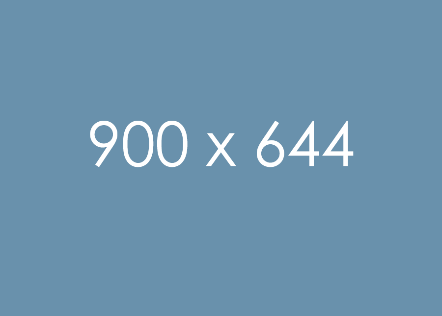

Web Design
Digital Graphics
Development
Web design encompasses many different skills and disciplines in the production and maintenance of websites. The different areas of web design include web graphic design; interface design; authoring, including standardised code and proprietary software; user experience design; and search engine optimization.

Our Skills One

With the rapid development of the internet, Web designers and web developers have become quite popular in recent years. With popularity, however, comes competition, begging the question, how does one improve their web design and development skills in & reserch.
Our Skill Tow
Web designers vs. web developers, obviously, they have clear boundaries and divisions of labor in their professional roles. With the development of technology and changes in product design, the skills of web designers are no longer limited to design, but & reserch.
Our Skills Three

How does one become a web designer? What skills do web designers need? How does one go about maximizing their salary in this field? You can get answers to all these questions in this article. Mockplus has summed up a web designer skills list for 2018 for & reserch.